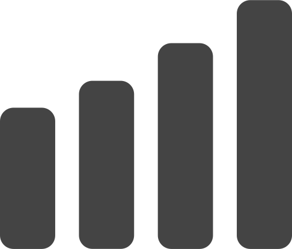
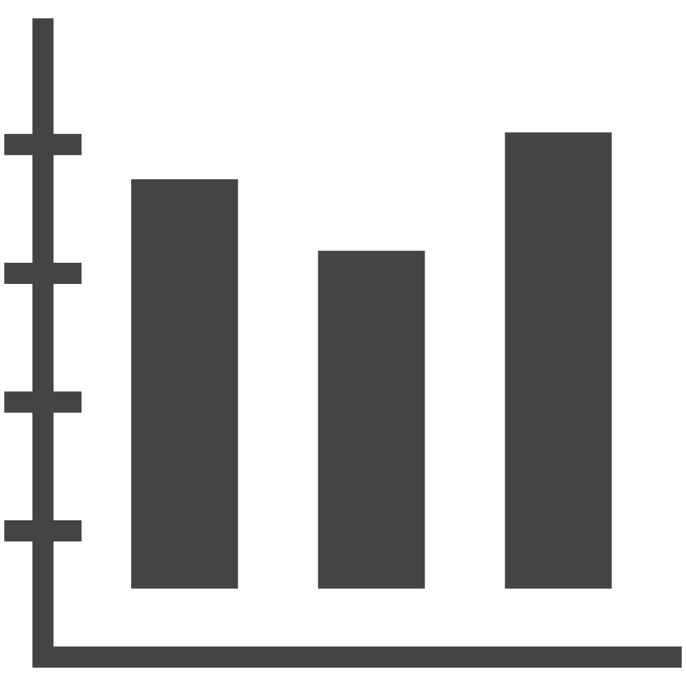
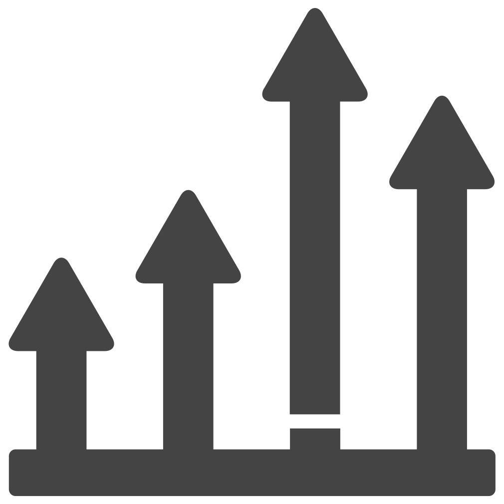
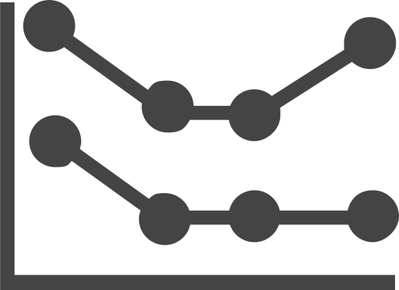
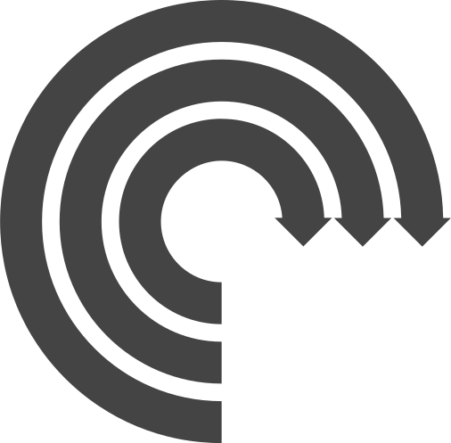
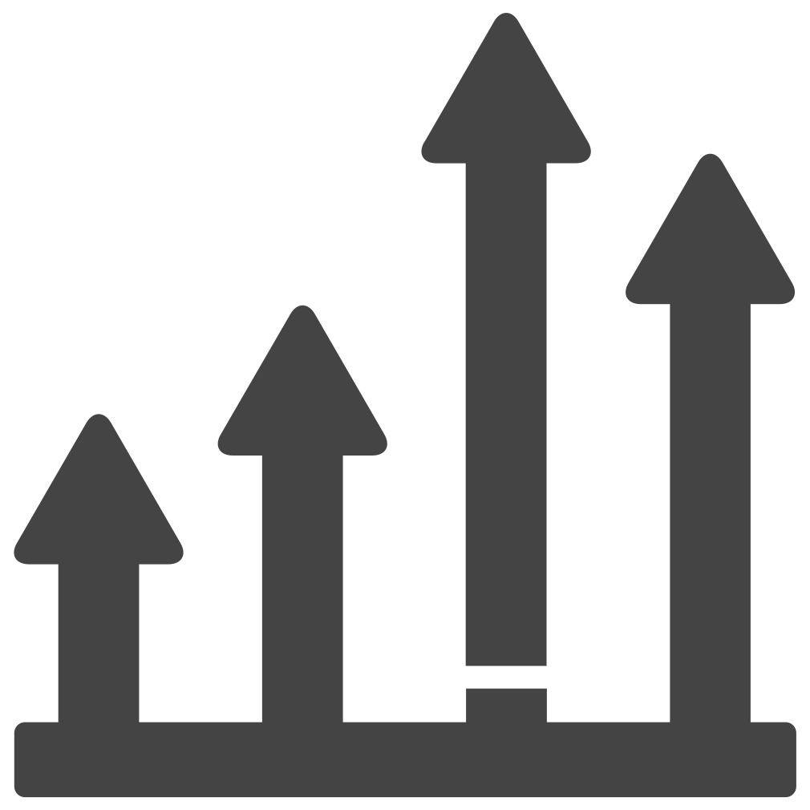
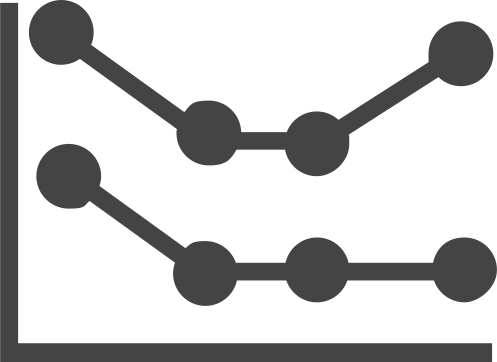
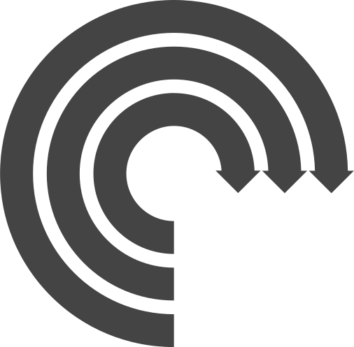

What is
INTERACTIVE WEB DESIGN
DYNAMIC CONTENT
Information that changes based on user behavior, preferences, or real-time data. This can include personalized recommendations, live news feeds, or updating charts.

 

MICRO
 INTERACTIONS
INTERACTIONS
Micro-interactions are small, animated responses to user actions, like a button clicking back or a switch sliding. These vital details provide instant feedback, guide users, and add a layer of polish to the experience, making any interface feel more alive and responsive.